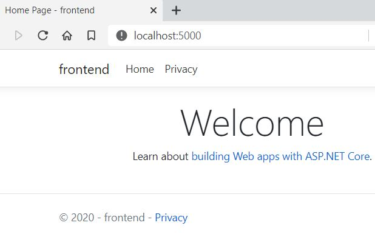
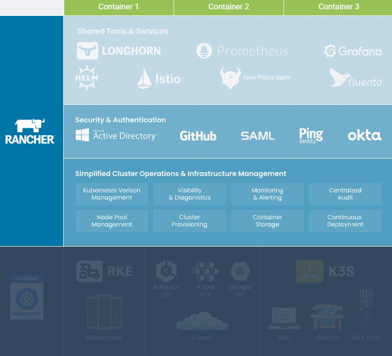

ASP.NET Core with k8s hosting
Posted on October 27, 2020 in Develop Updated: November 09, 2020
This blog is part of a serie:
- Part 0.1: Install Docker Desktop on Windows 10 Home - including WSL
- Part 0.2: Install k8s using kind on Windows - including arkade
- Part 1.1: Run docker containers
- Part 1.2: Develop .NET docker images
- Part 1.3: Run containers in k8s (this blog)
- Part 2: Deploy containers to Civo
Intro
This blog is an example of a development cycle developing in C# on Windows using VSCode editor - also for debugging docker containers - and deploying to k8s.
This blog is inspired by content from an eBook and some tutorials.
You find its code in this git repo: rasor/eBook-UsingNETCoreDockerKubernetes.
Main Sources are:
* Free eBook (2019): Syncfusion Free Ebooks | Using .NET Core, Docker, and Kubernetes Succinctly
* By @apomic80
* Github: apomic80
* Guide: Inner-loop development workflow for Docker apps
* from free eBook (2020): Containerized Docker Application Lifecycle with Microsoft Platform and Tools from Microsoft
PreRequisites
- Windows 10
- .NET Core 3.1 SDK
- Git Bash
- Visual Studio Code
- C# for VSCode
- Docker Desktop for Windows user manual
k8s(I am usingkindfor creating cluster)- Optional: choco
- Optional: jq
- Optional: helm
choco install kubernetes-helmorarkade get helm- Optional: draft
Chapters from eBook Using .NET Core, Docker, and Kubernetes
Chapter 1 ASP.NET and Docker Together
Chapter 1.1 Execute .NET Core application with Docker
See Part 1.1: Run docker containers
Chapter 2 Create Your Application with Docker
Chapter 2.1 Develop your ASP.NET Core application using Docker
See Part 1.2: Develop .NET docker images
Chapter 3 Deploy Your Application on Kubernetes
Chapter 3.2 Deploy your images in Kubernetes
I am using kind for creating a k8s cluster. I did that in this blog.
kubectl is a CLI using API to access k8s.
# check if k8s cluster is running
kubectl cluster-info
# Unable to connect to the server: dial tcp 127.0.0.1:52295: connectex: No connection could be made
# Check if there are any clusters
$ kind get clusters
# kind
# Check it the container is running
docker ps -a | grep kind
# CONTAINER ID IMAGE COMMAND CREATED STATUS PORTS NAMES
# 0b9a7220b4f8 kindest/node:v1.19.1 "/usr/local/bin/entr…" 5 weeks ago Exited (0) 3 weeks ago 127.0.0.1:52295->6443/tcp kind-control-plane
# start the k8s cluster
docker start kind-control-plane
# check if k8s cluster is running
kubectl cluster-info
# Kubernetes master is running at https://127.0.0.1:52295
# KubeDNS is running at https://127.0.0.1:52295/api/v1/namespaces/kube-system/services/kube-dns:dns/proxy
Testing starting the image in a pod manually:
# Manually start the container in k8s - and never restart it, when it dies - let proxy know that pod should listen to :5000 and give container env-vars.
kubectl run frontend2 --image=rasor/usingnetcoredockerkubernetes:frontend2-v1 --port=5000 --restart=Never --env="ASPNETCORE_URLS=http://+:5000"
# pod/frontend2 created
kubectl get pods
# NAME READY STATUS RESTARTS AGE
# frontend2 1/1 Running 0 24s
kubectl describe pod frontend2
# Name: frontend2
# Namespace: default
# Priority: 0
# Node: kind-control-plane/172.18.0.2
# Start Time: Tue, 27 Oct 2020 12:24:42 +0100
# Labels: run=frontend2
# Annotations: <none>
# Status: Running
# IP: 10.244.0.9
# IPs:
# IP: 10.244.0.9
# Containers:
# frontend2:
# Container ID: containerd://6134c6c308d49c4c49835009333ca5aaedf18d235712bec49a4ae4fbe9606c12
# Image: rasor/usingnetcoredockerkubernetes:frontend2-v1
# Image ID: docker.io/rasor/usingnetcoredockerkubernetes@sha256:e413934f1dba2e85b66f69125f6b4ac9944122c8f1c3d8f0f97355abb6ad8ec9
# Port: 5000/TCP
# Host Port: 0/TCP
# State: Running
# Started: Tue, 27 Oct 2020 12:24:42 +0100
# Ready: True
# Restart Count: 0
# Environment: <none>
# Mounts:
# /var/run/secrets/kubernetes.io/serviceaccount from default-token-95gtj (ro)
# Conditions:
# Type Status
# Initialized True
# Ready True
# ContainersReady True
# PodScheduled True
# Volumes:
# default-token-95gtj:
# Type: Secret (a volume populated by a Secret)
# SecretName: default-token-95gtj
# Optional: false
# QoS Class: BestEffort
# Node-Selectors: <none>
# Tolerations: node.kubernetes.io/not-ready:NoExecute for 300s
# node.kubernetes.io/unreachable:NoExecute for 300s
# Events:
# Type Reason Age From Message
# ---- ------ ---- ---- -------
# Normal Scheduled <unknown> Successfully assigned default/frontend2 to kind-control-plane
# Normal Pulled 11s kubelet, kind-control-plane Container image "rasor/usingnetcoredockerkubernetes:frontend2-v1" already present
# on machine
# Normal Created 11s kubelet, kind-control-plane Created container frontend2
# Normal Started 11s kubelet, kind-control-plane Started container frontend2
# And what does that mean?
kubectl explain pods
# read all deployed in default namespace
kubectl get all
# NAME READY STATUS RESTARTS AGE
# pod/frontend2 1/1 Running 0 6m57s
# NAME TYPE CLUSTER-IP EXTERNAL-IP PORT(S) AGE
# service/kubernetes ClusterIP 10.96.0.1 <none> 443/TCP 38d
API into k8s
Start proxy in another terminal.
This gives HTTP access to the k8s API on port 8001
kubectl proxy
Then open browser http://127.0.0.1:8001/
Try to reach pod via api: http://127.0.0.1:8001/api/v1/namespaces/default/pods/frontend2/proxy/
Nice - the pod responds with a webpage :-)
# print stdout from the container
kubectl logs frontend2
# Storing keys in a directory '/root/.aspnet/DataProtection-Keys' that may not be persisted outside of the container. Protected data will be unavailable when container is destroyed.
# No XML encryptor configured. Key {d848e8f7-df39-44b3-902c-b11019a1d9ab} may be persisted to storage in unencrypted form.
# Now listening on: http://[::]:5000
# Application started. Press Ctrl+C to shut down.
# Hosting environment: Production
# Content root path: /app
# Failed to determine the https port for redirect.
Stop the proxy with ctrl-c and instead use port forwarding:
# Give localhost TCP access from port 5000 to the POD port 5000
kubectl port-forward pod/frontend2 5000:5000
# Forwarding from 127.0.0.1:5000 -> 5000
# Forwarding from [::1]:5000 -> 5000
# browse to pod
start http://localhost:5000

# Delete the pod
kubectl delete pod frontend2
# pod "frontend2" deleted
Tip: * Port-forward also can forward to RS, SVC or Deployment * Port-forward also has --address to listen to * Port-forward tool for local dev: kubefwd
UI into k8s
To manage k8s you could use many different apps like * Kubernetes VSCode plugin * Double-click on a resource to see its yaml * View helm repos * View cloud clusters * kubernetes-dashboard - just read - install via arkade or from remote yml file
# install kubernetes-dashboard as a k8s app
kubectl create -f https://raw.githubusercontent.com/kubernetes/dashboard/master/aio/deploy/recommended/kubernetes-dashboard.yaml
# get login token
kubectl -n kube-system get secret
kubectl -n kube-system describe secret deployment-controller-token-?????
kubectl proxy
# paste login token into
start http://localhost:8001/api/v1/namespaces/kubernetes-dashboard/services/https:kubernetes-dashboard:/proxy/#/login
- portainer - install via arkade
- Rancher
docker run -d --restart=unless-stopped -p 80:80 -p 443:443 rancher/rancher- Kubernetic

(Image from Rancher)
Declare your infrastructure using yaml
To define managed k8s infrastructure you write k8s yaml.
Install Kubernetes Support in VSCode.
This will provide you with snippets for pods, services, deployments, etc.
Now create a new file called k8s-deploy-dev.yml
* Write kind: De then
* Press ctrl-space and select a Deployment template.
With yml created you create or apply the file using -f.
When you apply k8s will create-if-not-exist or change-if-not-correct.
If you create you should create --save-config. Create will throw error, if resource exists.
Read more...
These are the resources you can create (with the snippets):
clusterrole - Create a ClusterRole.
clusterrolebinding - Create a ClusterRoleBinding for a particular ClusterRole
configmap - Create a configmap from a local file, directory or literal value
cronjob - Create a cronjob with the specified name.
deployment - Create a deployment with the specified name.
job - Create a job with the specified name.
namespace - Create a namespace with the specified name
poddisruptionbudget - Create a pod disruption budget with the specified name.
priorityclass - Create a priorityclass with the specified name.
quota - Create a quota with the specified name.
role - Create a role with single rule.
rolebinding - Create a RoleBinding for a particular Role or ClusterRole
secret - Create a secret using specified subcommand
service - Create a service using specified subcommand.
serviceaccount - Create a service account with the specified name
Besides those above snippets you can find C# helm chart templates for
* deployment
* ingress
* service
... used by the k8s App builder tool Draft.
Note: draft is not yet upgraded to core 3.1, but is using core 2.1. The project is archieved!
You can also just grap the whole yaml from this blog: Build ASP.NET Core applications deployed as Linux containers into AKS/Kubernetes clusters
and correct then names.
You can print all resource types with
kubectl api-resources --sort-by=kind
They are
NAME SHORTNAMES APIGROUP NAMESPACED KIND
bindings true Binding
componentstatuses cs false ComponentStatus
configmaps cm true ConfigMap
endpoints ep true Endpoints
limitranges limits true LimitRange
namespaces ns false Namespace
nodes no false Node
persistentvolumes pv false PersistentVolume
persistentvolumeclaims pvc true PersistentVolumeClaim
pods po true Pod
podtemplates true PodTemplate
replicationcontrollers rc true ReplicationController
resourcequotas quota true ResourceQuota
secrets true Secret
services svc true Service
serviceaccounts sa true ServiceAccount
mutatingwebhookconfigurations admissionregistration.k8s.io false MutatingWebhookConfiguration
validatingwebhookconfigurations admissionregistration.k8s.io false ValidatingWebhookConfiguration
customresourcedefinitions crd,crds apiextensions.k8s.io false CustomResourceDefinition
apiservices apiregistration.k8s.io false APIService
controllerrevisions apps true ControllerRevision
daemonsets ds apps true DaemonSet
deployments deploy apps true Deployment
replicasets rs apps true ReplicaSet
statefulsets sts apps true StatefulSet
tokenreviews authentication.k8s.io false TokenReview
selfsubjectaccessreviews authorization.k8s.io false SelfSubjectAccessReview
selfsubjectrulesreviews authorization.k8s.io false SelfSubjectRulesReview
subjectaccessreviews authorization.k8s.io false SubjectAccessReview
localsubjectaccessreviews authorization.k8s.io true LocalSubjectAccessReview
horizontalpodautoscalers hpa autoscaling true HorizontalPodAutoscaler
cronjobs cj batch true CronJob
jobs batch true Job
certificatesigningrequests csr certificates.k8s.io false CertificateSigningRequest
leases coordination.k8s.io true Lease
endpointslices discovery.k8s.io true EndpointSlice
events ev events.k8s.io true Event
nodes metrics.k8s.io false NodeMetrics
pods metrics.k8s.io true PodMetrics
ingresses ing networking.k8s.io true Ingress
ingressclasses networking.k8s.io false IngressClass
networkpolicies netpol networking.k8s.io true NetworkPolicy
runtimeclasses node.k8s.io false RuntimeClass
poddisruptionbudgets pdb policy true PodDisruptionBudget
podsecuritypolicies psp policy false PodSecurityPolicy
clusterroles rbac.authorization.k8s.io false ClusterRole
clusterrolebindings rbac.authorization.k8s.io false ClusterRoleBinding
roles rbac.authorization.k8s.io true Role
rolebindings rbac.authorization.k8s.io true RoleBinding
priorityclasses pc scheduling.k8s.io false PriorityClass
csidrivers storage.k8s.io false CSIDriver
csinodes storage.k8s.io false CSINode
storageclasses sc storage.k8s.io false StorageClass
volumeattachments storage.k8s.io false VolumeAttachment
With the yaml in place you can now create or apply it:
# deploy image to k8s
kubectl create -f k8s-deploy-dev.yml
# deployment.apps/frontend2 created
# service/frontend2 created
# print
kubectl get services | grep frontend2
# NAME TYPE CLUSTER-IP EXTERNAL-IP PORT(S) AGE
# frontend2 LoadBalancer 10.106.254.38 <pending> 5000:30300/TCP 53s
# remove service
kubectl delete service frontend2
# service "frontend2" deleted
# remove replicaset, pod and deployment
kubectl delete deployment frontend2
# deployment.apps "frontend2" deleted
kubectl port-forward svc/frontend2 5000:5000
# Forwarding from 127.0.0.1:5000 -> 5000
# Forwarding from [::1]:5000 -> 5000
# Handling connection for 5000
# stop the k8s cluster
docker stop kind-control-plane
REFs
- Kubectl Reference Docs
- Using VSCode: Inner-loop development workflow for Docker apps
- Using Visual Studio: Development workflow for Docker apps
- Debug an app running in a Docker container
- Debug using launch.json: OmniSharp/omnisharp-vscode
- tasks.json: Build and run an ASP.NET Core app in a container
- tasks.json: Tasks in Visual Studio Code
- Dockerfile: Setting Default Docker Environment Variables During Image Build
- Change entry point: Containerize an app with Docker tutorial - .NET Core
- k8s: DevOps with Kubernetes and VSTS: Part 1
- AKS: Deploy to Azure Kubernetes Service (AKS)
- Using VS - AKS: Build ASP.NET Core applications deployed as Linux containers into AKS/Kubernetes clusters
- Program.cs Generic Host Builder in ASP .NET Core 3.1
The End